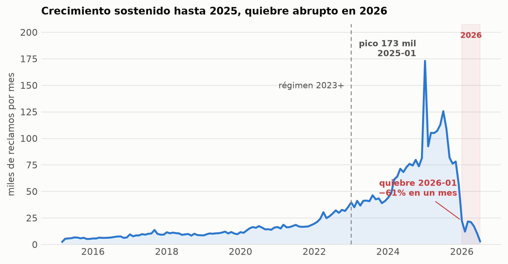
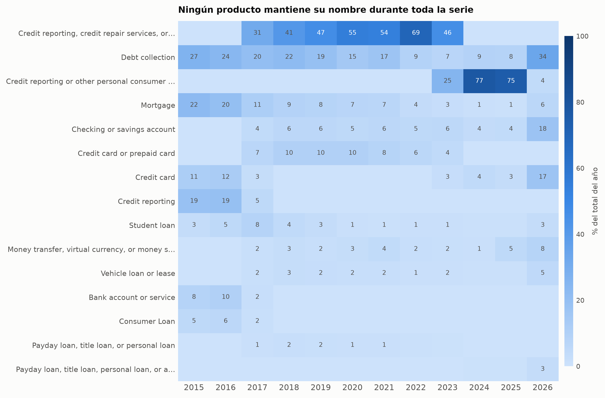
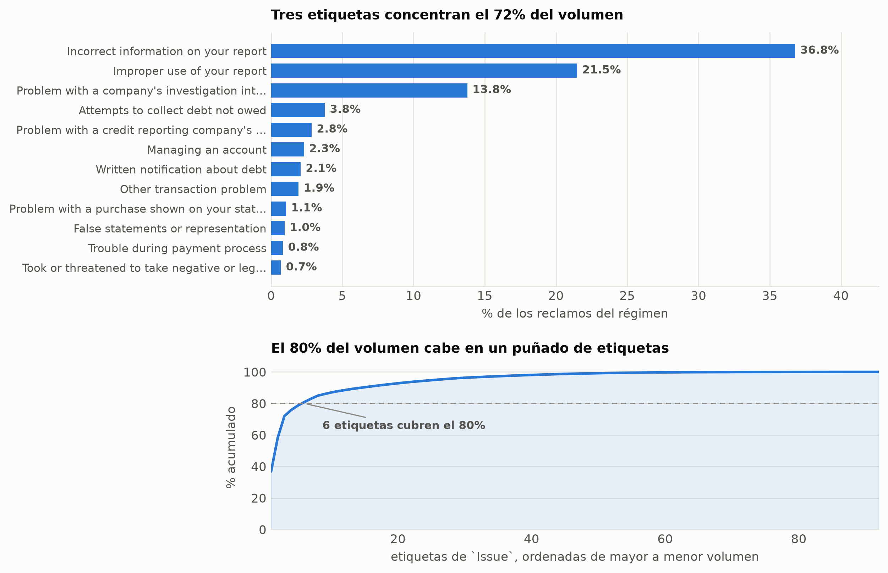
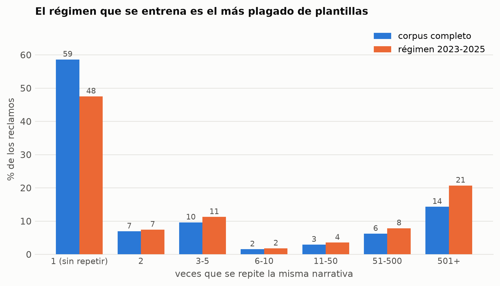
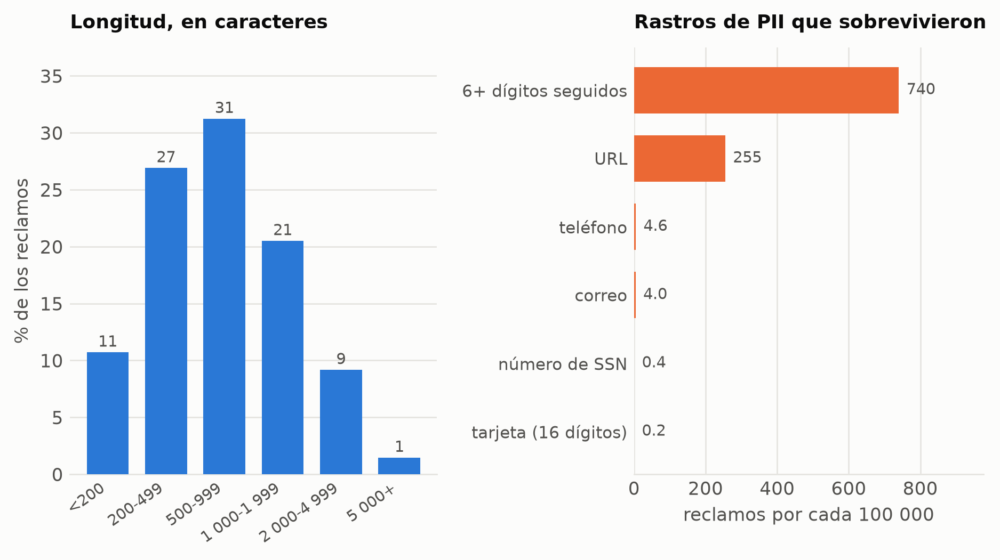
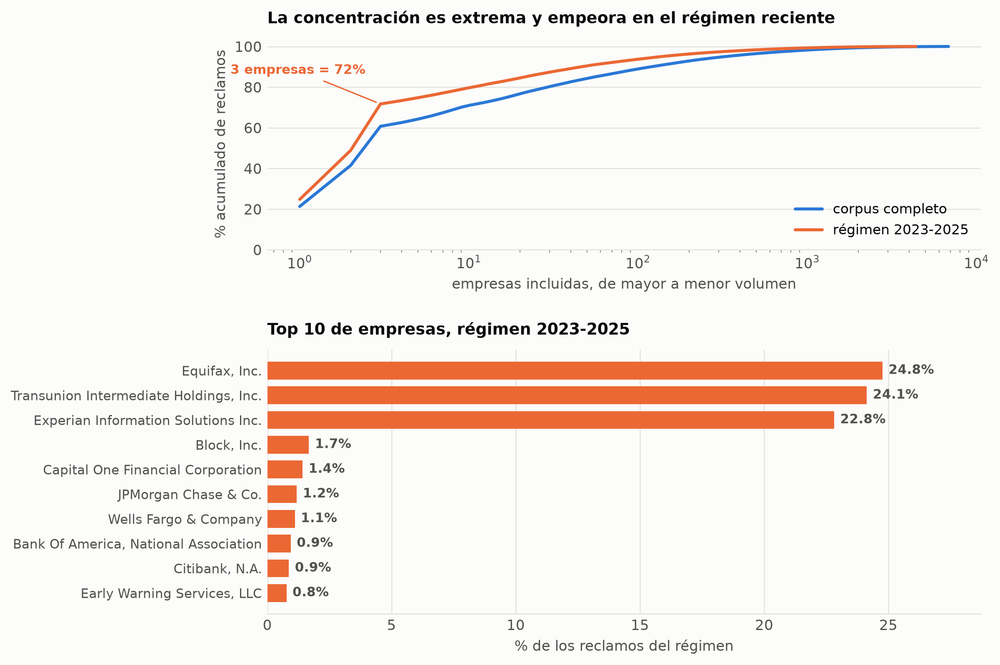
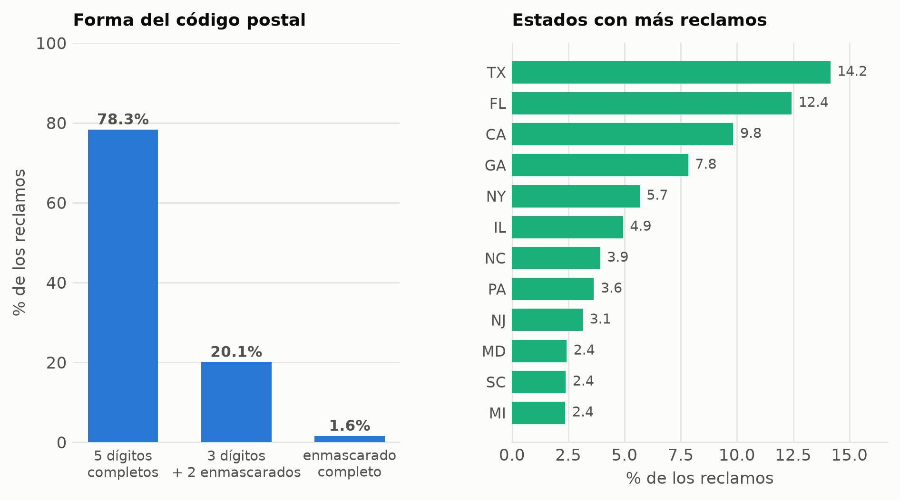
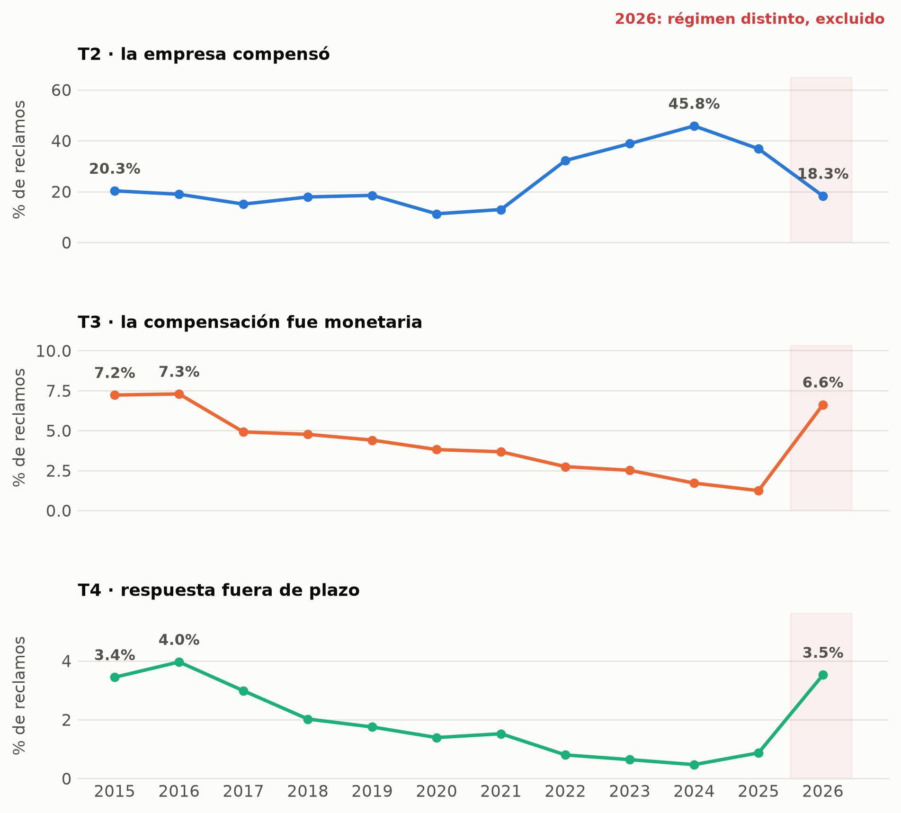
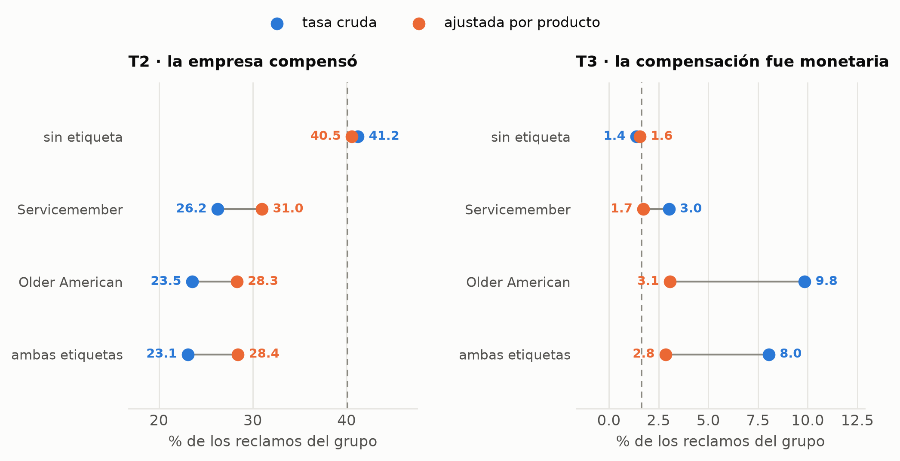
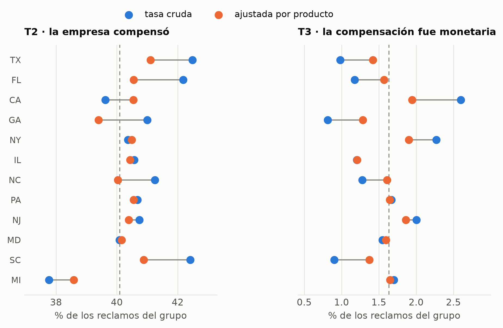

Informe de avance I — Exploración y transformación de datos
Autor/a
Equipo capstone
Fecha de publicación
24 de agosto de 2026
Resumen ejecutivo
Este informe documenta la exploración y creación de features del proyecto de triaje automático de reclamos financieros. Su alcance termina en matrices F0/R0/R1 validadas y versionadas. E12 y E13 usan clasificadores pequeños como sondas para medir señal y comparar representaciones; no son la selección final de modelos, que pertenece al Informe II. El mockup web y el agente redactor se describen para fijar el destino de las features, pero no forman parte del entregable de este informe.
El dato. 3,837,184 reclamos del Consumer Financial Protection Bureau (CFPB) con narrativa escrita por el consumidor, 16 columnas, marzo 2015 – julio 2026. Todas las columnas llegan como texto y ocupan 5.12 GB en memoria, de los cuales el 72% es la narrativa. De las 3,837,184 filas, solo 2,583,683 narrativas son únicas (67.3%): casi un tercio del corpus son textos repetidos, casi siempre plantillas.
Cuatro hallazgos que cambian el alcance.
El objetivo prometido en la propuesta no existe en el dato. Las diapositivas ofrecían predecir riesgo de disputa usando el campo «Disputa del consumidor». Ese campo no está entre las 16 columnas: el CFPB dejó de publicarlo en 2017. El objetivo se redefine como ¿tuvo la empresa que compensar al cliente?, declarado explícitamente como proxy.
La variable de resultado no es binaria.Company response to consumer tiene seis valores, no dos, y uno de ellos marca casos aún sin resolver. Tratarlos como «no hubo compensación» habría metido ruido dirigido en la etiqueta. La regla caso por caso está en la Sección 3.
La tasa base se mueve más que cualquier modelo. La proporción de reclamos con compensación pasa de 20% en 2015 a 11% en 2020, 46% en 2024 y 37% en 2025. Entrenar sobre la historia completa es entrenar sobre un fenómeno que ya no existe: el dataset principal se restringe al régimen 2023-2025.
2026 es un régimen distinto y hubo que excluirlo del conjunto de prueba. El volumen cae 61% en un solo mes, la composición por producto se da vuelta y las tres tasas base se invierten a la vez. La explicación fácil —casos aún abiertos— queda descartada por el propio dato. El detalle está en Sección 12; es el hallazgo que más afecta el diseño de la evaluación.
Avance. 11 de 20 etapas del pipeline tienen su artefacto producido y verificado (Sección 1).
1 Estado del pipeline
Cada etapa deja un artefacto en reports/artefactos/. Este informe lee esos artefactos, nunca el dato crudo: por eso se genera en segundos y las secciones se completan solas a medida que el pipeline avanza. Una etapa sin artefacto aparece marcada como pendiente en su sección correspondiente.
Etapa
Fase
Qué produce
Estado
E1
EDA
Perfil de tipos, nulos, cardinalidad y memoria
listo
D1b
Targets
Regla de etiquetado de T2/T3 caso por caso
listo
E2
EDA
Volumen por mes y cobertura temporal
listo
E3
EDA
Deriva de taxonomía: Product / Issue por año
listo
E9
EDA
Tasa base de los targets por año y por producto
listo
E4
EDA
Desbalance de clases: Pareto de Product e Issue
listo
E5
EDA
Duplicados y plantillas de narrativa
listo
E6
EDA
Narrativa: longitud, densidad de XXXX, PII residual
listo
E7
EDA
Concentración de empresas
listo
E8
EDA
Geografía: ZIP-3 y malformados
listo
E11
EDA
Sesgo por Tags y State, controlando por producto
listo
E12
EDA
Piso de señal: TF-IDF + LogReg
pendiente
E13
EDA
¿Vale un embedding? TF-IDF vs embedding local
pendiente
E14
EDA
Estructura latente: UMAP + HDBSCAN
pendiente
F2
Pipeline
Tipado y contrato de esquema (pandera)
pendiente
F3
Pipeline
Canonicalización de taxonomía
pendiente
F4
Pipeline
Deduplicación y splits temporales por grupo
pendiente
F5
Pipeline
Matriz de features y auditoría de fuga
pendiente
F6
Modelos
Métricas de T1-T4 y evaluación por cortes
pendiente
F7
Negocio
Simulación de la bandeja: FIFO vs riesgo
pendiente
Tabla 1: Estado de las etapas del pipeline. listo significa que el artefacto existe y fue verificado.
2 El dato
2.1 Perfil de las 16 columnas
Columna
Tier
Valores únicos
% nulos
Largo medio
MB
Date received
F0
4,138
0
10
65.9
Consumer complaint narrative
F0
2,583,683
0
1022.4
3770.7
Company
F0
6,831
0
26.5
126.3
ZIP code
F0
6,938
0.01
5
47.6
State
F0
63
0.36
2
37
Tags
F0
3
90.42
14.5
34.8
Product
F1
21
0
45.5
195.9
Issue
F1
173
0
38.5
170
Sub-product
F1
85
1.36
17.8
93.6
Sub-issue
F1
266
8.74
40
163.3
Date sent to company
FX
4,120
0
10
65.9
Company response to consumer
FX
6
0
25.5
122.8
Timely response?
FX
2
0
3
40.2
Company public response
FX
11
46.79
93
210.7
Complaint ID
ID
3,837,184
0
7.4
56.4
Submitted via
FUERA
1
0
3
40.3
Tabla 2: Perfil del dato crudo. tier es el contrato de disponibilidad: F0 se conoce al recibir el reclamo, F1 lo declara el formulario, FX solo existe después de que la empresa respondió.
Tres lecturas de esta tabla:
No hay ninguna variable numérica de origen. Todas las features numéricas habrá que construirlas desde el texto y las fechas.
Submitted via tiene un solo valor (Web) en las 3.8 millones de filas: varianza cero, se elimina.
Complaint ID es único en el 100% de las filas, así que sirve de clave de trazabilidad — y nunca como variable predictora.
2.2 El contrato anti-fuga
La decisión más importante de toda la fase. Las columnas se separan en tres niveles según cuándo se conocen:
Tier
Cuándo se conoce
Uso permitido
F0
al recibir el reclamo
variables predictoras de todos los modelos
F1
lo declara el formulario del CFPB
etiqueta del clasificador de motivo. En la bandeja de un banco este campo no existe, así que no puede ser variable predictora del modelo desplegable
FX
solo después de que la empresa respondió
únicamente objetivos y diagnóstico. Nunca variable predictora
Un modelo que use Timely response? o Company response to consumer para predecir riesgo obtendría métricas excelentes y sería inútil: esas columnas no existen en el momento en que hay que priorizar el reclamo. La Fase 5 debe añadir tests/test_no_leakage.py, una prueba que falle si una columna FX aparece en la matriz de variables; hasta que esa prueba y el artefacto F5 existan, el control está diseñado pero no implementado.
3 Los objetivos y su definición
3.1 Qué puede pagar el dato
Necesidad del negocio
Modelo
Objetivo
Clasificar y enrutar el reclamo
T1, multiclase
motivo canónico derivado de Issue, usado solo como etiqueta histórica
Priorizar por probabilidad de relief registrado
T2, binaria
la respuesta final registró relief monetario o no monetario
Probabilidad de relief monetario
T3, binaria
la respuesta registró relief monetario; no estima un monto ni costo esperado
Riesgo de respuesta tardía
T4, binaria
la respuesta salió fuera de plazo
Semáforo operativo
regla + T4
días restantes calculados + riesgo histórico estimado
Borrador de respuesta
agente LangGraph posterior a T1-T4
revisión humana y evaluación con rúbrica
Causas raíz por producto y mes
agregación, no es un modelo
—
Issue no se conoce al recibir un reclamo: en el histórico supervisa T1 y en producción T1 lo infiere desde F0. Los cuatro modelos alimentan una bandeja; un LLM separado redacta una recomendación y nunca modifica los scores ni envía texto sin aprobación.
flowchart TD
A[Nuevo reclamo F0] --> B[Saneo y features R0/R1]
B --> C[T1: motivo y equipo]
B --> D[T2: probabilidad de relief]
B --> E[T3: probabilidad monetaria]
B --> F[T4: riesgo de tardanza]
A --> G[Regla de fecha límite]
C --> H[Motor de triaje]
D --> H
E --> H
F --> H
G --> H
H --> I[Prioridad, equipo y semáforo]
B --> J[Casos similares y políticas aprobadas]
I --> K[Agente LangGraph redacta]
J --> K
K --> L[Guardrails]
L --> M[Revisión humana obligatoria]
3.2 La regla de etiquetado, caso por caso
Valor
Filas
%
T2 compensó
T3 monetario
Lectura
Closed with explanation
2,548,866
66.43
0
0
resuelto sin compensar
Closed with non-monetary relief
1,175,215
30.63
1
0
compensación no económica
Closed with monetary relief
98,150
2.56
1
1
compensación económica
Untimely response
11,092
0.29
0
0
la empresa no respondió a tiempo
Closed
3,741
0.1
0
0
categoría heredada, sin detalle
In progress
111
0
excluir
excluir
censura: aún sin resultado
(nulo)
9
0
excluir
excluir
sin etiqueta
Tabla 3: Los seis valores de Company response to consumer y su traducción a los objetivos T2 y T3. Dos casos se excluyen del entrenamiento en lugar de codificarse como cero.
El caso que importa es In progress: son reclamos cuyo resultado todavía no se conoce. Codificarlos como «no hubo compensación» equivale a afirmar algo que el dato no dice, y el error no sería aleatorio — se concentraría en los meses más recientes, que son justamente los del conjunto de prueba. Se excluyen, junto con los nulos.
Untimely response es distinto: sí es un desenlace, pero es ausencia de respuesta, no ausencia de compensación. Se etiqueta como cero y se marca con un indicador, para poder reportar su métrica por separado.
4 Cobertura temporal

Figura 1: Reclamos con narrativa recibidos por mes. El volumen crece de forma sostenida hasta 2025 y cae un 61% de un mes al siguiente en enero de 2026, quedándose después en una meseta baja durante seis meses. Una meseta no es un rezago de publicación.
La ventana 2023-2025 concentra el 66% de todo el corpus. Restringir el entrenamiento a ese periodo no sacrifica volumen: sacrifica historia que ya no describe el fenómeno actual. Lo que sí queda fuera, y por otra razón, es 2026 —ver Sección 12.
5 Deriva de la taxonomía

Figura 2: Participación de cada producto en el total del año. Las categorías no son estables: el CFPB renombró la familia de credit reporting dos veces, y cada rebautizo aparece aquí como una categoría que nace mientras otra muere.
Esta figura es la razón por la que existe una etapa de canonicalización: antes de entrenar nada hay que traducir las 21 etiquetas crudas de producto a un conjunto estable de unas 11, y las 173 de Issue a entre 25 y 40. El mapa se revisa a mano, se versiona en configs/taxonomia.yaml, y una prueba de regresión exige que cada etiqueta canónica exista tanto en entrenamiento como en prueba.
6 Desbalance de clases
El clasificador de motivo (T1) tiene que elegir entre las etiquetas de Issue. Antes de entrenar nada conviene saber cómo se reparte el volumen entre ellas, porque de eso depende qué métrica tiene sentido y cuántas clases sobreviven a la canonicalización.

Figura 3: Concentración de las etiquetas de Issue en el régimen 2023-2025. Arriba, las doce etiquetas más frecuentes. Abajo, cuántas etiquetas hacen falta para cubrir cada fracción del volumen: seis bastan para el 80%, y las 86 restantes se reparten el 19% que queda.
Nivel
Régimen
Clases
Top-1
Top-10
Clases hasta 80%
Clases <1000 filas
Product
histórico
21
43.6%
97.1%
4
2
Product
2023-2025
14
66.1%
98.8%
3
0
Issue
histórico
173
31.4%
78.6%
12
84
Issue
2023-2025
92
36.8%
86.9%
6
33
Tabla 4: Desbalance en los dos niveles de la taxonomía declarada, en el corpus completo y en el régimen que se entrena. clases <1000 cuenta las etiquetas con tan pocas filas que ninguna métrica por clase es estable.
Dos consecuencias, y ninguna es cosmética.
La primera es que la canonicalización tiene menos trabajo del que parecía, pero uno más delicado. De las 173 etiquetas de Issue del corpus histórico, solo 92 existen en 2023-2025: 81 pertenecen a taxonomías que el CFPB ya retiró. Agrupar las 173 sería construir un mapa para clases que nunca van a llegar. El mapa se construye sobre las 92, y las 81 restantes solo importan para el experimento de deriva.
La segunda es que el desbalance del régimen es peor que el del histórico, no mejor. La clase mayoritaria pasa de 31.4% a 36.8% y bastan seis etiquetas para cubrir el 80% del volumen. Un clasificador que responda siempre «información incorrecta en su reporte» acierta más de un tercio de las veces. Ese es el número que cualquier modelo tiene que superar, y es la razón por la que la métrica de T1 se reporta como macro-F1 y no como exactitud: la exactitud premia justamente a ese modelo inútil.
7 La narrativa
7.1 Cuánto del corpus es texto repetido

Figura 4: Reparto de los reclamos según cuántas veces se repite su narrativa. En el régimen 2023-2025 solo el 48% de los reclamos tiene un texto que no aparece en ningún otro, y uno de cada cinco pertenece a un grupo de más de 500 copias.
#
Copias
Producto
Extracto
#1
30,078
Credit reporting or other person…
In accordance with the Fair Credit Reporting act. The List of accounts below has violated my fed…
#2
22,430
Credit reporting or other person…
My credit reports are inaccurate. These inaccuracies are causing creditors to deny me credit. Yo…
#3
18,312
Credit reporting or other person…
You have reported inaccurate and unauthorized accounts on my credit report, which is a violation…
#4
15,802
Credit reporting or other person…
Upon reviewing my credit report, I have identified inaccurate accounts that need reporting and c…
#5
14,446
Credit reporting or other person…
The Fair Credit Reporting Act ( 15 U.S. Code 1681 ) says ( 1 ) The banking system is dependent u…
#6
12,335
Credit reporting or other person…
I have not supplied proof under the doctrine of estoppel by silence, Engelhardt V. Gravens ( mo …
Tabla 5: Las seis narrativas más repetidas del régimen 2023-2025, con su producto dominante. Son cartas modelo de disputa de crédito que circulan en internet; el consumidor las copia, cambia el nombre y las envía.
Qué cambia esto. En el corpus completo, el 41.4% de los reclamos comparte su narrativa con al menos otro; dentro del régimen 2023-2025 la cifra sube al 52.5%. Dentro de esa ventana, la plantilla más copiada aparece 30,078 veces, siempre sobre el mismo producto.
Una división aleatoria de entrenamiento y prueba pondría copias del mismo texto a ambos lados. El modelo memorizaría la plantilla y la métrica de prueba mediría esa memorización, no su capacidad de generalizar. Por eso la división de la decisión D4 es por grupo de narrativa: el hash del texto normalizado define el grupo y un grupo nunca se parte.
Un detalle de método que conviene dejar anotado, porque explica una diferencia con las cifras de versiones anteriores del plan. Sobre el texto tal cual llega, la proporción de filas repetidas es 39.1% y el grupo mayor tiene 27,496 copias. Al normalizar —colapsar espacios y pasar a minúsculas— esas cifras suben a 41.4% y 30,110. La diferencia son copias de la misma carta con distinto espaciado. Como el agrupamiento sirve para impedir fuga, la definición correcta es la normalizada: es la más conservadora de las dos.
7.2 Qué hay dentro del texto

Figura 5: Izquierda: longitud de la narrativa en caracteres. Dos tercios de los reclamos caben en menos de mil caracteres, pero la cola llega hasta 36 mil. Derecha: reclamos con rastros de datos personales que el enmascarado del CFPB no capturó, por cada cien mil. Las dos magnitudes se grafican por separado porque no comparten unidad ni escala.
Indicador
Valor
Longitud media
1,005 caracteres
Mediana / p90 / p99
661 / 2,068 / 5,874
Máximo
35,984
Reclamos con al menos un bloque XXXX
62.8%
Bloques XXXX por reclamo (media)
17.0
Caracteres enmascarados sobre el total
6.6%
Reclamos que mencionan un importe
18.5%
Reclamos con marcas de español
0.0019%
Tabla 6: Perfil de la narrativa en el régimen 2023-2025. Los bloques XXXX son el enmascarado que aplica el CFPB antes de publicar; el porcentaje de caracteres enmascarados mide cuánto del texto es ruido de anonimización.
Tres lecturas, cada una con una consecuencia.
El enmascarado es masivo y hay que tratarlo como una señal, no como ruido. El 63% de los reclamos contiene bloques XXXX y el 6.6% de todos los caracteres del corpus es enmascarado. Un TF-IDF ingenuo convertiría xxxx en el token más frecuente del vocabulario. La normalización de la Fase 5 lo reemplaza por un marcador único y, en paralelo, cuenta los bloques: cuántos datos tuvo que ocultar el CFPB es en sí mismo un indicador de qué tan cargado de identificadores viene el reclamo.
El corpus es monolingüe a efectos prácticos. Las marcas de español aparecen en el 0.0019% de los textos. No hace falta un detector de idioma ni un modelo multilingüe; conviene volver a revisarlo si el CFPB empieza a publicar el canal en español.
Queda PII residual, y eso bloquea el envío de texto a servicios externos. 25,335 reclamos del régimen contienen al menos un patrón que el enmascarado no capturó: direcciones de correo, URL, cadenas de seis o más dígitos. Son pocos en proporción —menos del 1%— pero no son cero, y basta con que no sean cero. La regla 4 de la decisión D6 se mantiene: ningún texto sale de la red del proyecto sin un segundo enmascarado, y el nivel R1 local no tiene este problema en absoluto. Conviene tomar la cifra como cota superior: una cadena de seis dígitos puede ser un número de cuenta o puede ser un importe sin enmascarar, y este conteo no los distingue.
8 Contra quién se reclama, y desde dónde
8.1 Concentración de empresas

Figura 6: Arriba: porcentaje acumulado de reclamos a medida que se añaden empresas, ordenadas de mayor a menor volumen (eje horizontal logarítmico). Abajo: las diez empresas con más reclamos en el régimen 2023-2025. Tres burós de crédito reúnen el 72% del volumen del periodo que se entrena.
Reclamos por empresa
Empresas
Reclamos
% del volumen
0-9
2,759
7,892
0.3%
10-99
1,157
37,605
1.5%
100-999
350
107,692
4.3%
1 000-9 999
87
257,139
10.2%
10 000+
18
2,113,522
83.7%
Tabla 7: Distribución de las empresas por volumen de reclamos en el régimen 2023-2025. Las 2,759 empresas con menos de diez reclamos aportan el 0.3% del volumen: no hay con qué estimarles un efecto propio y van a un bucket común.
Dos consecuencias para el modelo. La primera es de codificación: con 4,371 empresas en el régimen y un 75% del volumen en las cinco primeras, un one-hot es inviable y una codificación por frecuencia o por objetivo es obligatoria — calculada solo con datos anteriores al periodo de cada fila, para no filtrar el futuro. La cola larga se agrupa en un bucket OTRA.
La segunda es más incómoda y afecta a la interpretación de todo lo que venga después. Si tres burós de crédito concentran el 72% de los reclamos del régimen —contra el 61% del corpus completo—, un modelo de texto puede alcanzar buenas métricas aprendiendo a reconocer de qué empresa se habla en vez de qué problema se describe. El agrupamiento no supervisado de la etapa E14 tiene que correrse dos veces, con y sin los nombres de empresa enmascarados; si los grupos cambian mucho, ese hallazgo vale más que el agrupamiento original.
8.2 Geografía: qué queda del código postal

Figura 7: Izquierda: forma del campo ZIP code en el régimen 2023-2025. El CFPB enmascara los dos últimos dígitos de los códigos poco poblados y el código entero en algunos casos. Derecha: los doce estados con más reclamos. Los dos paneles están separados porque uno reparte el 100% entre tres categorías y el otro entre sesenta y una.
Campo
Filas
% del régimen
Valores distintos
Reclamos del régimen
2,523,850
100.00%
—
ZIP code no nulo
2,523,850
100.00%
6,935
Con prefijo ZIP-3 utilizable
2,483,614
98.41%
876
State no nulo
2,515,633
99.67%
61
Tabla 8: Cardinalidad de los campos geográficos en el régimen 2023-2025. El prefijo de tres dígitos es la única unidad geográfica que sobrevive al enmascarado, y baja la cardinalidad de casi siete mil valores a 876.
La decisión que sale de aquí. El código postal completo no sirve como variable: el 20.1% de los reclamos lo trae con los dos últimos dígitos enmascarados y el 1.6% no trae nada. Pero el prefijo de tres dígitos —el que identifica el área postal— sobrevive en el 98.4% de las filas, y baja la cardinalidad de 6,935 valores a 876. La variable geográfica del proyecto es ZIP-3, más un indicador booleano de que el código venía enmascarado, que es informativo por sí mismo: el CFPB enmascara justamente los códigos de áreas poco pobladas.
Una corrección sobre el plan, menor pero conviene dejarla escrita: las 290 filas que el plan describía como «malformadas» no lo son. Son nulos, y están todos fuera del régimen 2023-2025 —dentro de la ventana que se entrena, ZIP code no tiene ni un nulo. No existe ningún valor con una forma distinta de las tres de la figura: entre los 2,523,850 reclamos del régimen, el campo o trae cinco dígitos, o trae tres y dos equis, o trae cinco equis. En el corpus completo el enmascarado afecta al 22.4% de las filas.
9 Tasas base de los objetivos

Figura 8: Tasa base anual de los tres objetivos binarios. Se grafican en paneles separados y no superpuestos porque sus escalas difieren en un orden de magnitud; forzarlos a un eje común aplanaría los dos de abajo hasta volverlos ilegibles.
Año
Reclamos
Censurados
T2 %
T3 %
T4 %
2015
54,723
0
20.28
7.22
3.44
2016
77,766
0
18.93
7.29
3.96
2017
115,311
0
15.06
4.91
2.98
2018
118,393
1
17.87
4.76
2.02
2019
124,843
0
18.5
4.4
1.75
2020
174,297
0
11.25
3.81
1.39
2021
203,570
0
12.93
3.67
1.52
2022
337,273
0
32.19
2.74
0.8
2023
487,410
1
38.83
2.51
0.64
2024
814,384
7
45.8
1.71
0.47
2025
1,222,056
110
36.8
1.24
0.87
2026
107,158
1
18.27
6.62
3.52
Tabla 9: Tasas base por año. censurados son los reclamos marcados como aún sin resolver, excluidos del cálculo.
Las tres series se mueven juntas en 2026 y en la dirección contraria a su tendencia. Eso no es ruido de un año incompleto: es el mismo fenómeno visto tres veces, y merece sección propia.
Producto
Reclamos
T2 %
T3 %
T4 %
Credit reporting or other personal consumer re…
1,671,841
47.33
0.06
0.18
Credit reporting, credit repair services, or o…
807,499
29.15
0.25
0.5
Debt collection
441,051
19.06
0.56
3.54
Checking or savings account
186,789
20.36
14.89
0.98
Mortgage
146,301
6.71
3.35
1.69
Credit card
126,827
32.61
17.37
0.58
Money transfer, virtual currency, or money ser…
120,644
8.75
5.47
1.55
Credit card or prepaid card
108,683
30.38
18.19
1.12
Student loan
62,620
6.32
1.53
10.02
Vehicle loan or lease
53,005
9.3
3.17
1.95
Tabla 10: Tasa base por producto crudo. Las diferencias entre productos son mayores que la señal que cualquier modelo puede extraer del texto, así que toda evaluación se reporta también por producto.
10 Sesgo por perfil del consumidor
El dato trae dos campos que describen a quien reclama: Tags, que marca si es servicemember o adulto mayor, y State. La pregunta obligatoria antes de poner un modelo a priorizar reclamos es si esos grupos reciben resultados distintos. La respuesta cruda es que sí, y es engañosa.
Un reclamo marcado Older American termina en compensación monetaria mucho más seguido que uno sin etiqueta. Pero los adultos mayores no reclaman sobre los mismos productos: solo el 21% de sus reclamos son del producto dominante del régimen, contra el 68% del resto. Y la tasa de compensación depende sobre todo del producto. Sin estratificar, lo que se mide es la mezcla de productos del grupo, no un trato distinto.
La figura pone las dos cifras lado a lado. La cruda es la proporción observada. La ajustada es la tasa que tendría el grupo si su mezcla de productos fuera la de la población — estandarización directa, calculada por estrato de producto y reagregada con los pesos de la población. La distancia entre ambas es la parte del efecto que explica la composición; lo que sobrevive al ajuste es lo que hay que mirar en serio.

Figura 9: Tasa cruda y tasa ajustada por producto para cada grupo de Tags, régimen 2023-2025. La línea punteada es la tasa de la población. Ajustar por producto reduce la brecha de compensación monetaria de los adultos mayores de siete veces a dos, pero no la elimina; en el objetivo T2 el ajuste apenas mueve la aguja.
Grupo
Reclamos
% prod. dominante
T2 crudo
T2 ajustado
T3 crudo
T3 ajustado
(población)
2,523,850
66%
40.09%
40.09%
1.64%
1.64%
(sin etiqueta)
2,347,041
68%
41.20%
40.55%
1.38%
1.55%
Servicemember
120,281
43%
26.25%
30.98%
3.02%
1.73%
Older American
43,058
21%
23.53%
28.30%
9.85%
3.07%
Older American, Servicemember
13,352
24%
23.07%
28.42%
8.04%
2.84%
Tabla 11: Cortes por Tags en el régimen 2023-2025. % producto dominante es el indicador de mezcla: cuánto pesa en el grupo el producto que domina la población. Es la columna que explica por qué la tasa cruda y la ajustada no coinciden.
El número que no se puede citar solo. En el régimen 2023-2025, un reclamo marcado Older American termina en compensación monetaria el 9.85% de las veces, contra el 1.38% de los reclamos sin etiqueta: una razón de 7.1 a 1. Controlando por producto, las tasas pasan a 3.07% y 1.55%, y la razón cae a 2.0 a 1. Es decir: la composición explica alrededor del 82% de la brecha, pero no toda.
Eso deja dos obligaciones, no una.
La primera es de comunicación: la cifra cruda no puede aparecer en una diapositiva sin su versión ajustada al lado. Decir que los adultos mayores reciben siete veces más compensación monetaria es describir su cartera de productos, no el trato que reciben.
La segunda es que el residuo no es cero y no se puede archivar. Después de ajustar, Older American sigue duplicando la tasa de compensación monetaria y sigue 12 puntos por debajo en T2. El ajuste por producto crudo es un control grueso: quedan afuera el sub-producto, el motivo y la empresa. La evaluación por cortes de la Fase 6 tiene que reportar métricas por estos grupos de forma rutinaria, y un modelo que priorice reclamos no puede usar Tags como variable sin que alguien decida explícitamente que eso es aceptable.

Figura 10: Lo mismo, para los doce estados con más reclamos. Aquí el ajuste sí cierra casi toda la diferencia: la dispersión entre estados en T2 se reduce a menos de tres puntos, y lo que parecía una brecha geográfica en T3 es en su mayor parte una diferencia en qué productos se reclama en cada estado.
Estado
Reclamos
% prod. dominante
T2 crudo
T2 ajustado
T3 crudo
T3 ajustado
(población)
2,523,850
66%
40.09%
40.09%
1.64%
1.64%
TX
357,157
71%
42.48%
41.10%
0.98%
1.42%
FL
313,733
70%
42.18%
40.55%
1.18%
1.57%
CA
248,188
63%
39.62%
40.54%
2.60%
1.95%
GA
197,682
71%
41.00%
39.40%
0.81%
1.28%
NY
143,210
65%
40.37%
40.49%
2.27%
1.90%
IL
124,578
66%
40.57%
40.43%
1.21%
1.21%
NC
98,934
69%
41.25%
40.03%
1.28%
1.61%
PA
91,776
64%
40.67%
40.55%
1.67%
1.65%
NJ
79,375
66%
40.74%
40.39%
2.00%
1.86%
MD
61,207
66%
40.09%
40.16%
1.55%
1.59%
SC
60,248
72%
42.41%
40.88%
0.90%
1.37%
MI
59,802
63%
37.77%
38.58%
1.70%
1.65%
Tabla 12: Cortes por State en el régimen 2023-2025, ordenados por volumen. La dispersión que queda después del ajuste es del orden de la décima de punto porcentual: no hay un efecto geográfico grande escondido detrás de la composición.
El contraste con Tags es lo interesante. Entre los doce estados más grandes, el rango de la tasa T2 pasa de 4.7 puntos porcentuales en crudo a 2.5 después de ajustar, y la razón entre el estado con más y el con menos compensación monetaria baja de 3.2 a 1.6. Dicho de otro modo: la geografía casi no aporta nada por sí misma, y lo que parecía un efecto de estado era la mezcla de productos que se reclama en cada uno.
Esto tiene una consecuencia práctica que ahorra trabajo: no hace falta tratar el estado como una variable sensible con manejo especial, pero sí conviene dejar el corte en la evaluación por si el patrón cambia con los datos nuevos. Y refuerza lo del apartado anterior — que el residuo de Tags sobreviva al mismo ajuste que borra el de State es precisamente lo que lo hace digno de atención.
11 Cierre del EDA y creación de features
E12-E14 cierran la exploración, pero necesitan una preparación mínima reproducible. No se pueden ejecutar sobre una muestra aleatoria ni diseñar la taxonomía mirando el test. El orden operativo es:
flowchart TD
A[Dato crudo DVC] --> B[Fijar cortes temporales]
B --> C[Tipado mínimo y targets]
C --> D[Hash y auditoría de repetidos]
D --> E[Muestra de train]
E --> F[R1 local una vez por hash]
F --> G[E14 solo sobre train]
G --> H[Congelar taxonomía]
H --> I[Split temporal completo]
I --> J[E12 R0]
F --> K[E13 R0 frente a R1]
I --> K
J --> L[Features auditadas]
K --> L
11.1 Qué significa deduplicar
Deduplicar aquí no significa borrar reclamos. Dos personas pueden copiar una plantilla y obtener desenlaces distintos. La narrativa normalizada recibe un hash_narrativa para:
calcular el embedding una sola vez por texto;
impedir que el clustering esté dominado por miles de copias de una plantilla;
medir cuánto del rendimiento viene de memorizar textos conocidos;
auditar hashes con empresas, productos o targets contradictorios.
Se conservan dos evaluaciones temporales. La operacional permite que una plantilla vista en train reaparezca después, como puede ocurrir en la bandeja. La de generalización a texto nuevo purga de validación/test los hashes ya vistos en train y es la lectura anti-memorización. Colapsar un grupo a una fila solo es válido para E14; los modelos de outcome conservan las filas si sus desenlaces son eventos distintos.
11.2 E12 — Piso de señal R0
E12 ajusta word+character TF-IDF exclusivamente en train y usa regresión logística o SGDClassifier(loss="log_loss"). Es una sonda barata, no la selección final. Reportará macro-F1/top-3 para T1 y PR-AUC, Brier, log loss, lift y recall a capacidad fija para T2-T4. Accuracy no sirve como métrica principal para T3/T4 por su prevalencia cercana al 1%.
AdvertenciaPendiente — E12
Piso de señal: TF-IDF + LogReg. El artefacto e12_piso_senal.csv todavía no existe; esta sección se completa sola al ejecutar:
uv run python -m src.models.baseline
11.3 E13 — ¿Aporta R1 local?
Sobre exactamente las mismas filas, splits y clasificadores, E13 compara: F0 tabular, R0, F0+R0, R1 local, F0+R1 y F0+R0+R1. La primera implementación usa all-MiniLM-L6-v2; sus vectores se cachean por hash_narrativa. El criterio es mejora predictiva, memoria y latencia, no que el método sea más moderno.
AdvertenciaPendiente — E13
¿Vale un embedding? TF-IDF vs embedding local. El artefacto e13_embeddings.csv todavía no existe; esta sección se completa sola al ejecutar:
uv run python -m src.features.embeddings
11.4 E14 — Estructura latente
E14 usa únicamente textos únicos de train. Compara embedding → UMAP 10-15D → HDBSCAN contra TF-IDF → SVD → KMeans. El UMAP 2D se reserva para visualizar. La corrida se repite con nombres de empresa enmascarados y con varias semillas; reporta ARI, NMI, pureza, porcentaje de ruido y estabilidad. El clustering aporta evidencia al mapa canónico, pero no lo edita automáticamente.
AdvertenciaPendiente — E14
Estructura latente: UMAP + HDBSCAN. El artefacto e14_clusters.csv todavía no existe; esta sección se completa sola al ejecutar:
uv run python -m src.data.cluster_evidence
11.5 Fases 2-5 — Del parquet crudo a matrices entrenables
El Informe I documentará cada transformación con entradas, parámetros, salidas, conteos y pruebas:
Tipado: fechas, booleanos, categorías, tags separados y contrato Pandera.
Repetidos: hash, conflictos de etiquetas y vistas operacional/texto único.
Canonicalización: mapa manual versionado, definido con train y aplicado sin cambios.
Split: train 2023-2024, validación 2025-01/06 y test 2025-07/12; 2026 queda como stress test OOD separado.
R0: word/character TF-IDF y señales deterministas, con fit solo en train.
R1: embedding local versionado, una vez por hash.
Ensamblado: IDs/tabulares en Parquet, TF-IDF CSR en .npz, embeddings en .npy e índices/manifiestos en Parquet.
Auditoría: dimensiones, memoria, nulos, cobertura, columnas por tier y prueba que prohíbe FX.
AdvertenciaPendiente — F5
Matriz de features y auditoría de fuga. El artefacto f5_features.csv todavía no existe; esta sección se completa sola al ejecutar:
uv run python -m src.features.build
DVC debe rastrear el DAG completo, no solo el parquet crudo:
flowchart TD
A[raw] --> B[typing]
B --> C[hash y repetidos]
C --> D[embedding local]
D --> E[E14]
E --> F[canonicalize]
F --> G[split]
G --> H[features R0/R1]
H --> I[E12/E13]
I --> J[artefactos del informe]
Cada etapa declara código/configuración como dependencia, artefactos como salidas y semillas, ventanas, muestra y modelo de embedding en params.yaml. dvc.lock fija los hashes que permiten reproducir cada tabla del informe.
12 El quiebre de 2026
Al empezar el análisis, la explicación de trabajo para las cifras raras de 2026 era la obvia: censura, es decir, reclamos recientes cuyo desenlace todavía no se ha registrado. El dato descarta esa explicación y deja algo más incómodo en su lugar.
Evidencia 1 — el campo de censura está vacío. De los 107,158 reclamos de 2026, exactamente uno aparece marcado como In progress. Si el problema fuera que los casos siguen abiertos, ese contador sería enorme. No lo es.
Evidencia 2 — el volumen no decae, se quiebra. Diciembre de 2025 cierra con 56,510 reclamos y enero de 2026 con 22,211: una caída del 61% en un mes. Después el volumen se queda en una meseta de entre 10 mil y 22 mil durante seis meses. Un rezago de publicación produce una cola que se desvanece en los últimos uno o dos meses, no un escalón seguido de una meseta estable.
Evidencia 3 — cambia la composición, no solo la cantidad. Es el argumento decisivo. En 2025 la familia credit reporting representaba el 75% de los reclamos del año; en 2026 cae al 4%, mientras debt collection sube de 8% a 34% y checking or savings account de 4% a 18% (Figura 2). Un rezago de publicación retrasa reclamos de todos los tipos por igual y conserva la mezcla. Aquí la mezcla se da vuelta por completo.
Conclusión. Las tres piezas apuntan a lo mismo: 2026 no es 2025 con menos datos, es un proceso generador distinto. El dato por sí solo no dice por qué —eso exige verificar qué cambió en la operación o en la política de publicación del CFPB durante ese periodo, y es una pregunta abierta que el equipo debe resolver con fuentes externas, no con el parquet.
Consecuencia operativa, que ya se aplicó: el régimen de entrenamiento se cierra en diciembre de 2025, y la división temporal se reacomoda íntegramente dentro de él — entrenamiento 2023-01 a 2024-12, validación 2025-01 a 2025-06, prueba 2025-07 a 2025-12. La propuesta original usaba 2026 como periodo de prueba; hacerlo habría significado medir el modelo contra una distribución que no es la que verá en producción, y habría producido un número de evaluación pesimista y sin sentido.
13 Decisiones de diseño registradas
#
Decisión
Consecuencia
D1
El objetivo prometido no existe; se reemplaza por «la empresa compensó», declarado como proxy
cambia la promesa de la propuesta
D1b
Regla de etiquetado caso por caso; In progress y nulos se excluyen
evita ruido dirigido en la etiqueta
D2
Contrato F0 / F1 / FX de disponibilidad temporal
ninguna columna post-respuesta puede ser variable predictora
D3
Ventana de entrenamiento restringida a 2023-2025
descarta historia que ya no describe el fenómeno, y excluye el régimen distinto de 2026
D4
División temporal y por grupo de narrativa, nunca aleatoria; prueba en 2025-07 a 2025-12
las plantillas repetidas no pueden cruzar de entrenamiento a prueba, y la evaluación ocurre dentro de un régimen estable
D5
Muestra de desarrollo de 300 mil filas estratificada
itera en minutos, no en horas
D6
R0 TF-IDF y R1 local son las únicas representaciones predictivas; el LLM queda después de T1-T4
el agente puede cambiar sin regenerar features y no contamina la evaluación
La justificación completa de cada una está en docs/plan-eda-y-transformacion.md.
14 Riesgos abiertos
Riesgo
Estado
Mitigación
El objetivo de la propuesta no existe
confirmado
D1: se usa un proxy y se declara como tal
Empresa como atajo del modelo
abierto
tres burós concentran el 72% del régimen; E14 debe repetirse con los nombres enmascarados (Sección 8.1)
PII residual en la narrativa
medido, mitigación obligatoria
menos del 1% de los textos, pero no cero: segundo enmascarado antes de cualquier llamada externa (Sección 7.2)
El quiebre de 2026 no tiene causa identificada
abierto, ya mitigado en el diseño
2026 excluido; la prueba se mueve a 2025-07/2025-12. Falta confirmar la causa con fuentes externas al dataset
Fuga por columnas post-respuesta
contrato definido; prueba pendiente
F5 debe añadir una prueba automática que falle si aparece FX
Memorización de plantillas
cuantificada; implementación pendiente
hash, evaluación operacional y evaluación purgada; 52% de las filas del régimen 2023-2025 comparte texto con otra (Sección 7.1)
Deriva de etiquetas y de tasa base
cuantificado
régimen 2023+, mapa canónico versionado, prueba de regresión
Sesgo por perfil del consumidor
medido, con un residuo abierto
la mezcla de productos explica ~4/5 de la brecha de Older American, pero no toda; State se explica casi entero (Sección 10). Cortes obligatorios en la evaluación de la Fase 6
15 Próximos pasos
Crear el pipeline DVC de tipado, hash/repetidos y muestra temporal de train.
Generar R1 local una vez por hash y completar E14 sin mirar validación/test.
Congelar la taxonomía y construir los splits temporal, operacional y purgado.
Completar E12/E13 sobre las mismas filas y crear matrices R0/R1 con auditoría FX.
Incorporar sus artefactos a este informe y renderizar el entregable EDA + features.
Confirmar con fuentes externas qué originó el quiebre de 2026 (Sección 12); mientras tanto se conserva como stress test OOD separado.
16 Reproducibilidad
Todo el contenido de este informe se regenera desde el dato crudo con:
uv syncdvc pull # descarga el dataset versionadouv run python -m src.data.profile # E1uv run python -m src.data.agregados # D1b, E2, E3, E4, E7, E8, E9uv run python -m src.data.narrativa # E5, E6 (dos pasadas por la narrativa)uv run python -m src.evaluation.slices # E11# Cuando las etapas pendientes estén implementadas:# uv run dvc repro # F2-F5, E12-E14 y artefactosuv run quarto render reports/informe # este documento
El informe lee exclusivamente los CSV de reports/artefactos/, nunca el parquet de 1.6 GB. Las secciones sin artéfacto se marcan como pendientes en lugar de fallar, así que el documento siempre compila.
Nota sobre uso de IA generativa
Se utilizaron herramientas de IA generativa como apoyo en la redacción de código y de este documento. Todas las cifras presentadas se calcularon sobre el dato real mediante el código versionado en src/, y son verificables ejecutando los comandos de Sección 16. Las decisiones de diseño y su justificación fueron revisadas por el equipo.